← Índice de los 69 tutes de IDA
Tute 14 · Unpacking 1: UPX
▶ video afín (mismo autor, en x64dbg): «10 Unpacking 1 - UPX»
INTRODUCCIÓN AL REVERSING CON IDA PRO DESDE CERO PARTE 14.
Desempacaremos el archivo CRACKME.exe empacado con UPX.
Este curso será variado y abarcará diferentes tópicos del reversing (ya dijimos reversing estático, debugging, unpacking, exploiting por ejemplo),
En este capítulo desempacaremos el archivo CRACKME.exe empacado con el último UPX. No significa que vamos a hacer un montón de partes solo con unpacking continuadas, iremos variando de temas, y mezclando diferentes tópicos para que nadie se aburra, así que habrá empacados cada tanto, mezclados con otros temas.
Archivos empacados
La definición de archivo empacado es un archivo que oculta el código ejecutable de un programa, guardándolo con algún tipo de compresión o encriptación para que no se pueda reversear fácilmente, agrega además un STUB o sección desde donde arranca, que toma en tiempo de ejecución el código empacado, lo desempaca en memoria en alguna otra sección o en la misma, para que se pueda ejecutar y luego salta a ella.
Hay mil variantes de packers, y muchos son además protectores, rompiendo la IAT o tabla de importaciones, rompiendo el HEADER, agregando código antidebugger para evitar el desempacado y reconstrucción del archivo original.
El caso más simple de packer es UPX, que no tiene antidebuggers, ni trucos sucios, pero permite iniciarse como siempre por lo más sencillo, adjunto estará el archivo PACKED_CRACKME.EXE.
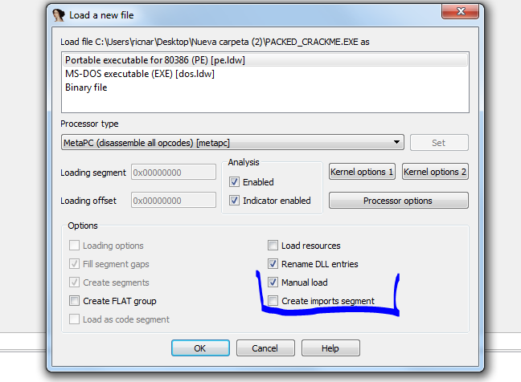
Le pondremos la tilde a MANUAL LOAD y le quitamos la de CREATE IMPORTS SEGMENT ya que es necesario que tengamos todas las secciones cargadas, y si puede afectar la tilde de CREATE IMPORTS SEGMENTS, la verdad no lo sé, pero IDA aconseja quitarla cuando es un empacado así que lo haremos.
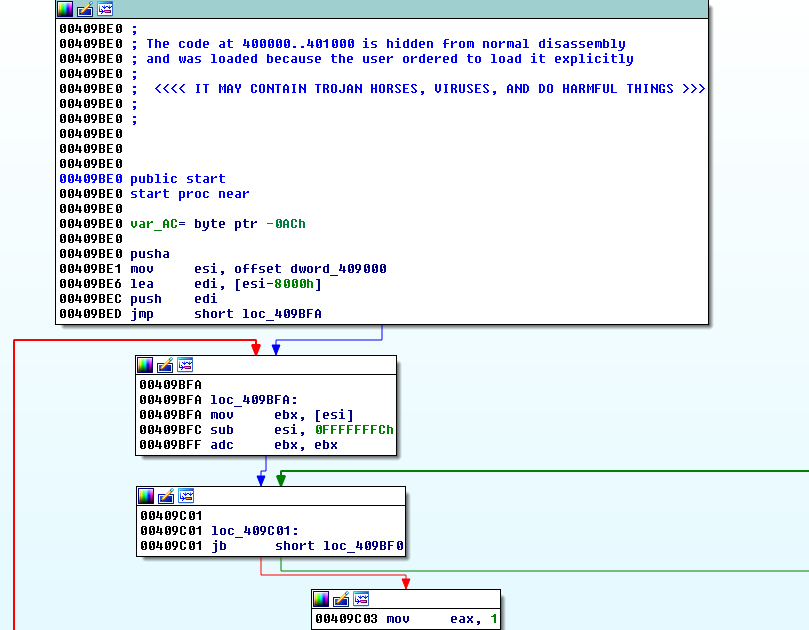
Ese es el start o ENTRY POINT del archivo PACKED_CRACKME.exe, vemos que se encuentra en la dirección 0x409be0, mientras que el original se encontraba en 0x401000, como veamos abajo.
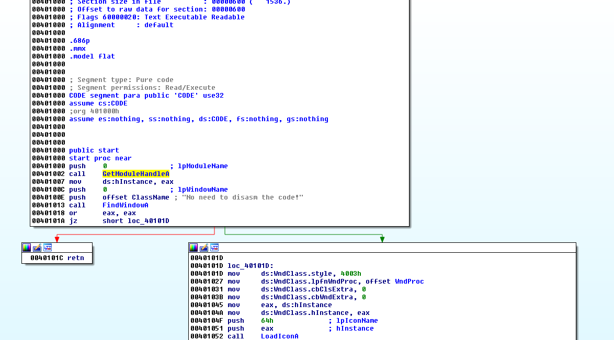
También comparando los segmentos de ambos, vemos que el packeado luego del header tiene un segmento llamado UPX0, cuyo largo en memoria es más largo que el programa original.
ORIGINAL
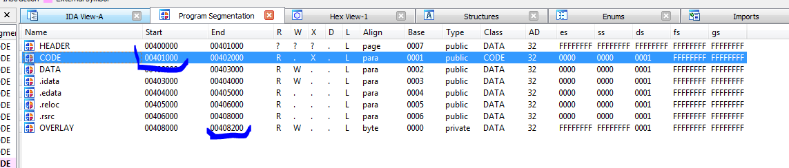
PACKEADO
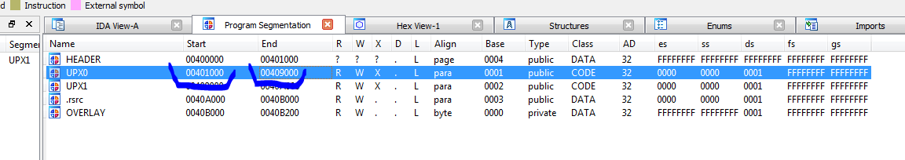
Vemos que la sección UPX0 del packeado termina en 0x409000 mientras que en el original todas las secciones se ubican en la memoria desde 0x401000 hasta 0x408200,
Ojo que estamos hablando de memoria virtual o sea cuando arranca un programa puede tener 1k en el disco y reservar 20 K o lo que quiera en la memoria.
Eso se puede ver en el IDA por ejemplo en la dirección de inicio 0x401000 de la sección de código del original vemos.
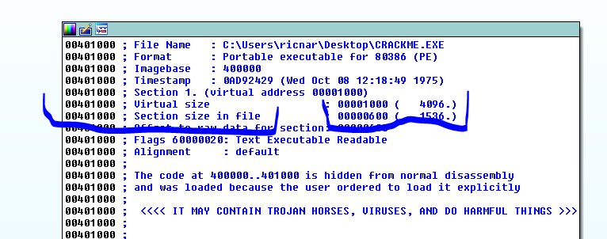
Dicha sección (SECTION SIZE IN FILE) ocupa 0x600 bytes, mientras que en memoria (VIRTUAL SIZE) ocupa 0x1000.
Mientras que el empacado, si vamos a 0x401000 que es el inicio de la sección UPX0.
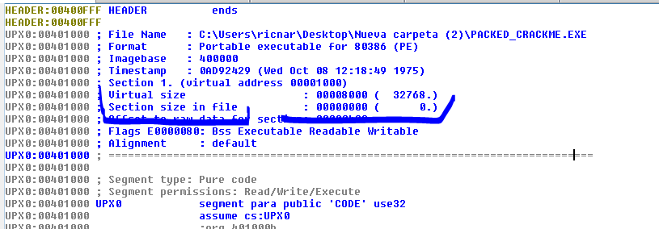
Vemos que es una sección de largo 0 bytes en el disco, pero en la memoria ocupa 0x8000 o sea que esto reserva espacio vacío, para armar aquí el código del programa original y luego saltar a ejecutarlo, hay suficiente espacio para hacerlo.
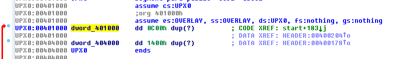
También vemos que la dirección 0x401000 por el prefijo dword_ delante significa que su contenido es del tipo DWORD.
El signo (?) significa que solo está reservado o sea no tiene contenido y el dup o multiplicar, significa que se multiplica ese dword por 0xc00 o sea 0x3000 bytes reservados.
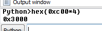
Luego en 0x404000 hay 0x1400 dwords mas (?) o sea solo reservados.
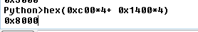
O sea, en total hay reservados en memoria 0x8000 bytes para armar allí el programa.
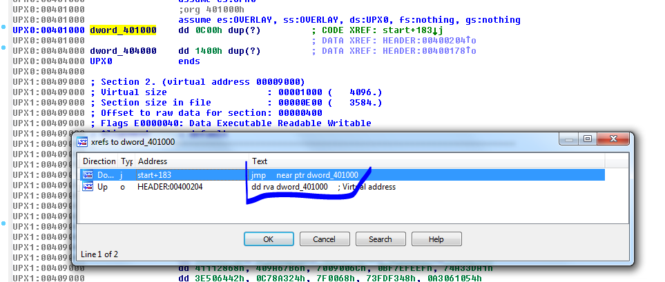
También vemos que en 0x401000 hay una referencia a código ejecutable ya veremos que es.
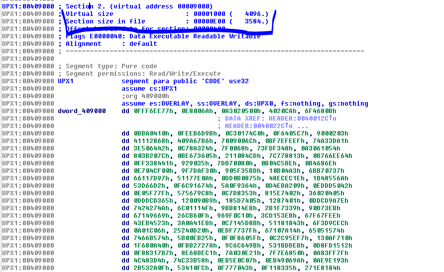
Luego el packeado tiene esta segunda sección cuyo size en el disco es 0xe00 y en la memoria 0x1000 y que posiblemente sea el programa original guardado con algún método de encripcion simple para que no se pueda ver el código original.
Si miramos las referencias en la dirección de inicio de la sección 0x409000.
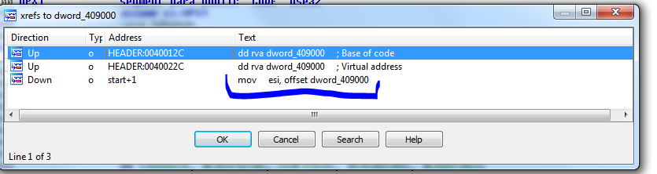
Vemos que hacia abajo (DOWN) hay una referencia en una parte ejecutable, si hacemos click allí.
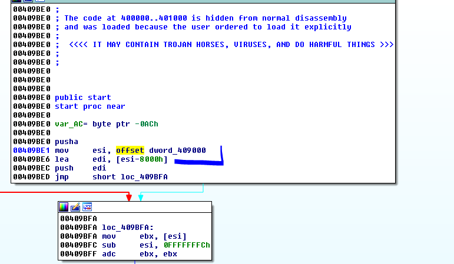
Vemos que en el STUB a continuación del entry point carga la dirección 0x409000 (recordar el OFFSET delante)
Si apretamos la barra ahí vemos
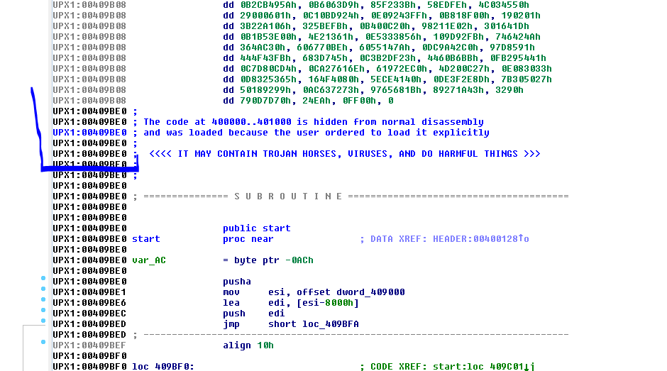
Que el código del STUB está en la misma sección UPX1 debajo del código empacado del programa original, o sea que en la sección UPX1 tenemos tanto los bytes guardados del programa original encriptados y el código del STUB a partir de 0x409be0.
No hay que ser muy pillo para darse cuenta que ira leyendo bytes desde 0x409000 le aplicara ciertas operaciones y los guardara en 0x401000, vemos que EDI es igual a ESI-0x8000 o sea
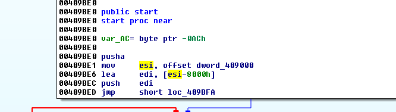
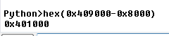
O sea se ve que usara el contenido de ESI como SOURCE de donde ira leyendo los datos, les aplicara ciertas operaciones y los guardara en el contenido de EDI, lo que ira armando el programa.
Habíamos dicho que en 0x401000 había una referencia a código ejecutable, si hacemos doble click en esa referencia.

Vemos que hay un salto a 0x401000.
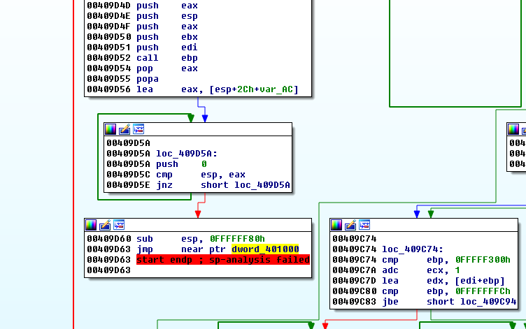
JMP NEAR es un salto directo a la dirección que está al lado o sea que saltara a 0x401000, evidentemente aquí luego ejecutar todo el STUB y armar el código original, saltara al OEP en 0x401000 que sería el ORIGINAL ENTRY POINT que es diferente del ENTRY POINT del STUB que se encuentra en 0x00409BE0
Llamaremos OEP o ORIGINAL ENTRY POINT al ENTRY POINT del programa original, obviamente como es un programa empacado no se sabe dónde está y solo nosotros como tenemos el original podemos saber que estaba en 0x401000.
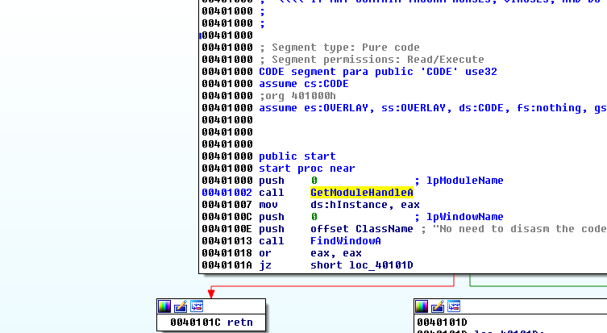
Obviamente cuando nos llega un programa empacado no sabemos cuál es el OEP, porque no tenemos el original, así que va a haber que hallarlo, viendo cuando el STUB termine de hacer todas sus tretas y termine de armar el código original, saltará a ejecutarlo para comenzar el programa, casi siempre, la primera línea de código que ejecute en esa sección que armo será el OEP.
Podríamos poner un BREAKPOINT en ese JMP al OEP, para ver si allí el programa original ya está armado, probemos.
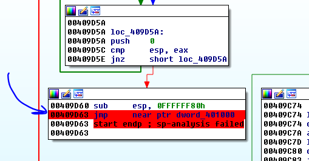
Elijamos el debugger LOCAL WIN32 DEBUGGER y apretemos START DEBUGGER.
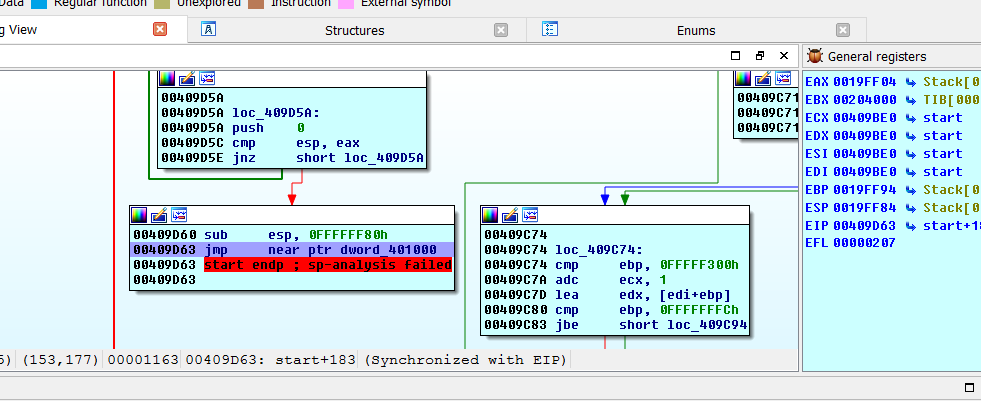
Allí paro en el salto al OEP, traceemos un paso con f8.
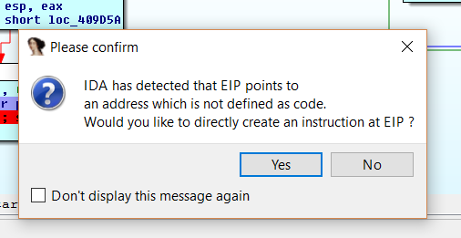
Apretamos YES para que interprete como CODIGO la primera sección UPX0 que estaba definida como DATA.
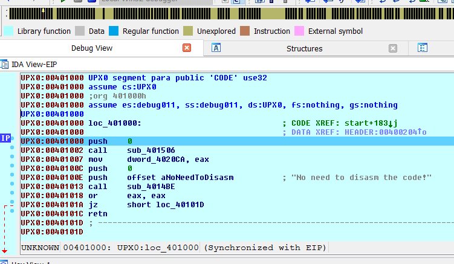
Vemos que ya desempaco el código y salto a ejecutar. El código es muy parecido al 0x401000 del original, aunque vemos que al querer pasar a modo grafico no lo hace porque no está definido como función (loc_401000), pero lo haremos automáticamente.
Hay un menu medio oculto en la esquina inferior izquierda, haciendo click derecho, elijo REANALYZE PROGRAM.
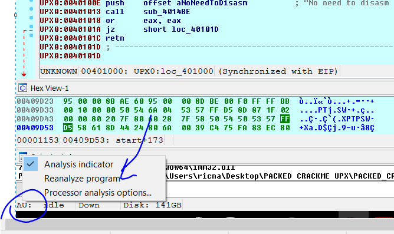
Vemos que al cliquearlo la dirección loc_401000 cambio a sub_401000 lo cual indica que ahora es una función, así que podemos cambiarla a modo gráfico con la barra espaciadora.
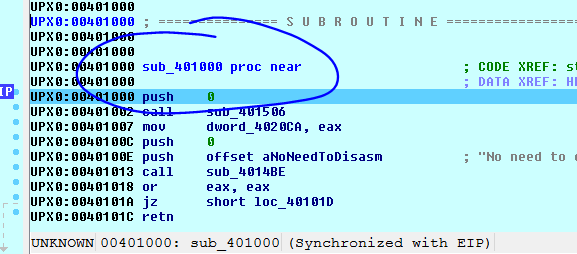
Ahora quedo más linda.
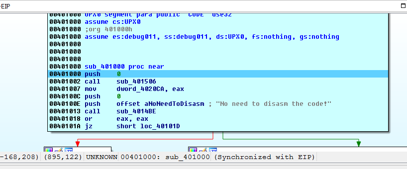
Una diferencia que vemos es que el original mostraba en 0x401002 por ejemplo CALL GetModuleHandleA, mientras que esta muestra CALL sub_401056, veamos que hay dentro de ese CALL.
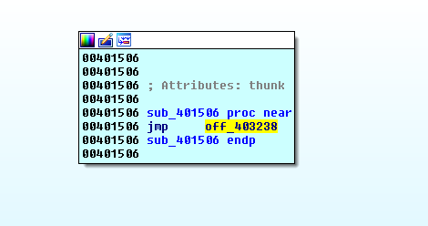
Veamos la diferencia con el original, si entramos en el CALL GetModuleHandleA en el original.
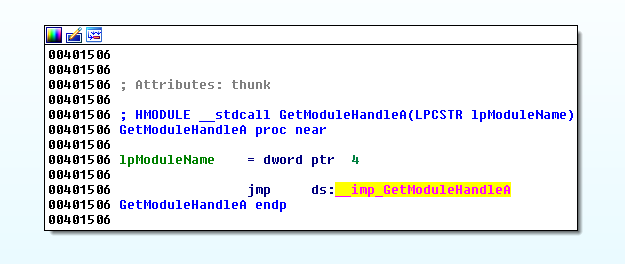
También hay un salto indirecto, aquí detecta que salta a la api, el otro no, pero donde va el packeado allí?
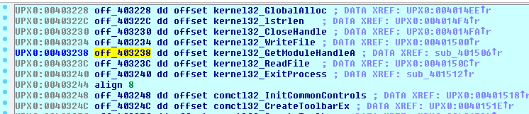
El contenido de 0x403028 es un offset (off_) o sea la dirección de la api GetModuleHandleA y en el original la misma dirección esta en la sección idata y contiene también la dirección de la misma api.
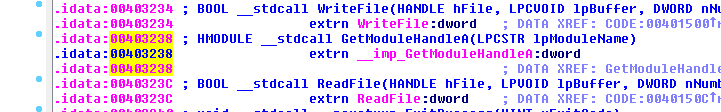
A pesar de que terminan saltando al mismo lugar, hay una diferencia muy importante que veremos más adelante.
Yo tengo el código del programa desempacado, aunque aún no es funcional y si solo tengo que analizar estáticamente el código del programa que se armó en la primera sección, lo que hago es lo siguiente.
Primero en SEGMENTS
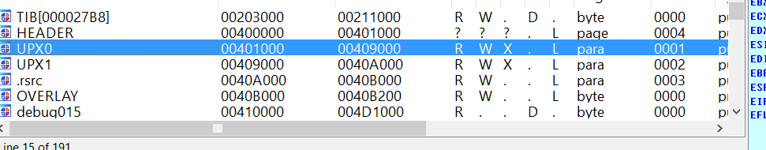
Verifico que todas las secciones del packer tengan la L o sea que cargaran en el LOADER, como vemos en la imagen, incluso puedo agregar alguna dll o segmento que quiera que esté en el análisis estático, haciendo CLICK DERECHO-EDIT SEGMENT en la línea que queremos agregar al LOADER.
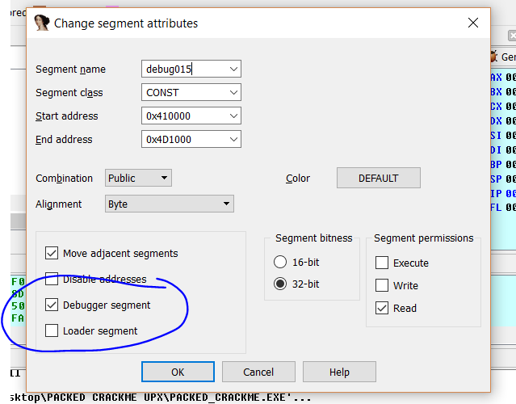
Los segmentos que queremos que se agreguen le ponemos la tilde en LOADER SEGMENT, en este caso solo dejaremos los segmentos del PACKER pero es bueno saber que podemos agregar otros.
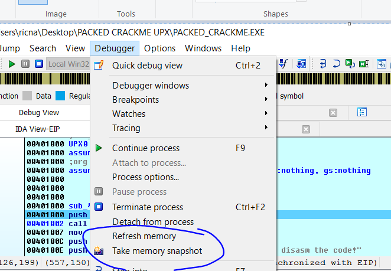
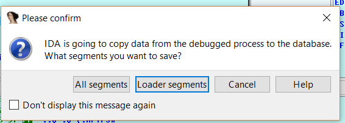
Luego la opción TAKE MEMORY SNAPSHOT guardara los segmentos que hayamos marcados como LOADER con el código que tengan. (NO CONFUNDIR CON LA OTRA OPCION FILE-TAKE DATABASE SNAPSHOT que estudiamos antes)
Vemos que si paro el DEBUGGER, y por supuesto quedo en el LOADER y voy a 0x401000 en vez de estar vacío como antes, ahora aparece el código que copiamos cuando estábamos parado en el OEP y que ahora está disponible para hacer reversing estático al igual que todos los segmentos que tengan la L, por supuesto al arrancar el DEBUGGER de nuevo se perdería porque lo pisaría con los bytes que realmente estarán allí al inicializar la sección en el DEBUGGER, así que si necesitamos la database con el análisis estático, debemos copiarla a otra carpeta y abrirlo con otro IDA para trabajar tranquilos.
Si arranco de nuevo el debugger y paro en el ENTRY POINT del mismo antes de ejecutar el STUB, veo que la zona de 0x401000 esta vacía nuevamente.
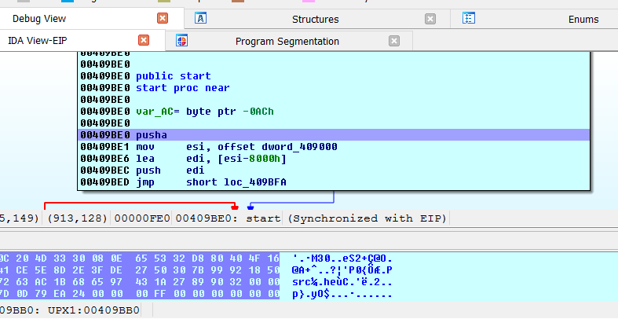
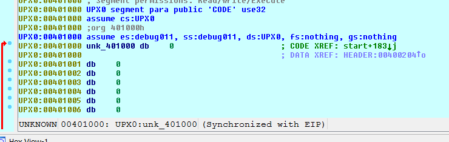
Lo que habíamos guardado en la database se perdió, porque en el DEBUGGER la info del LOADER se pisó con los bytes que inicializaron la sección UPX0, así que, si lo necesitamos para reversing estático, como dije antes luego de hacer el TAKE MEMORY SNAPSHOT hay que copiarlo a otra carpeta, antes de volver a arrancar el debugger.
Como soy un molesto voy a buscar una segunda forma de encontrar el OEP, que es buscando la primera instrucción que se ejecute en la primera sección, es otro método que a veces puede funcionar.
Arranco de nuevo el PACKEADO en el DEBUGGER, parando en su ENTRY POINT.
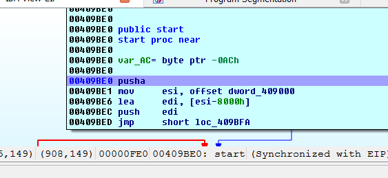
Voy a la primera sección donde comienza a 0x401000.
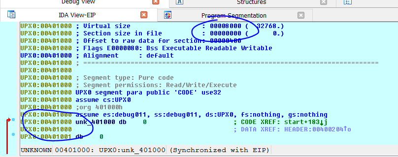
Allí coloco un BREAKPOINT con f2, lo configuro para que pare por EXECUTE o sea cuando ejecuta y no cuando se escriba o lea allí ya que sino parara cuando copia el código y lo va armando y no quiero eso, solo quiero que cuando este armado y salte a ejecutar, pare en la primera instrucción que ejecute, y como no sé cuál será, pongo un BREAKPOINT ON EXECUTE que abarque toda la sección (0x8000 bytes)
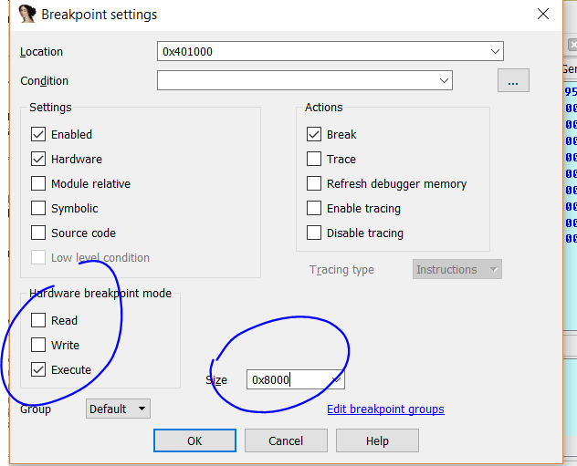
Se ponen todas las instrucciones rojas.
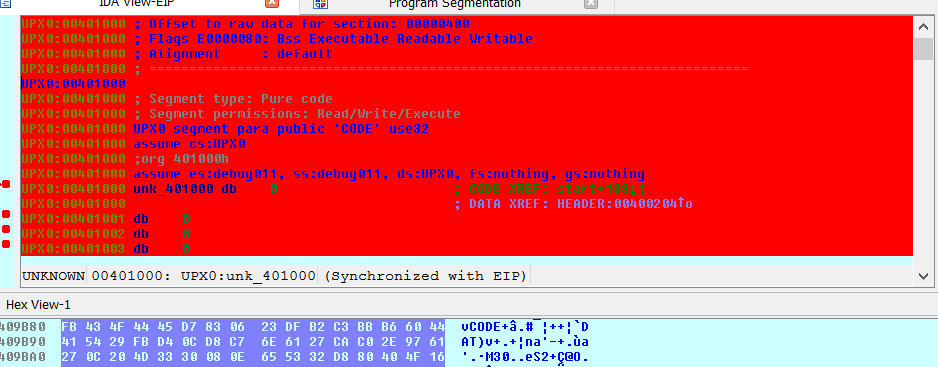
Deshabilito los otros dos breakpoints en DEBUGGER-BREAKPOINT-BREAKPOINT LIST.
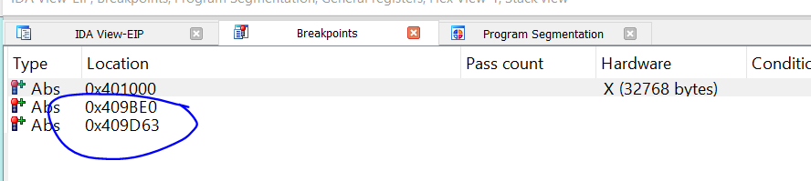
CLICK DERECHO-DISABLE.
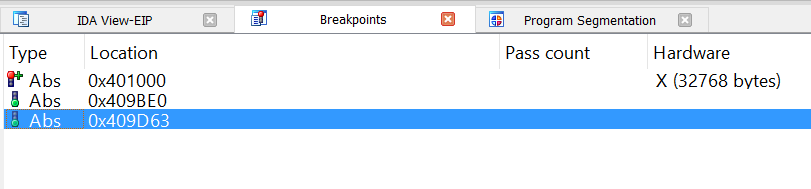
Y ahora si doy RUN.
Y veo que la primera instrucción que paro en la sección recién armada es en este caso 0x401000 mi OEP hallado.
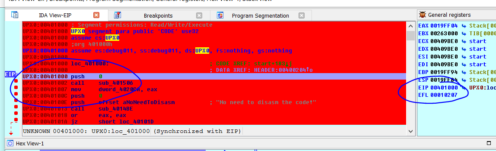
O sea que usando este método coincide y hallamos el OEP que es 0x401000, quito el breakpoint.
Luego de reanalizar me queda de nuevo como función.
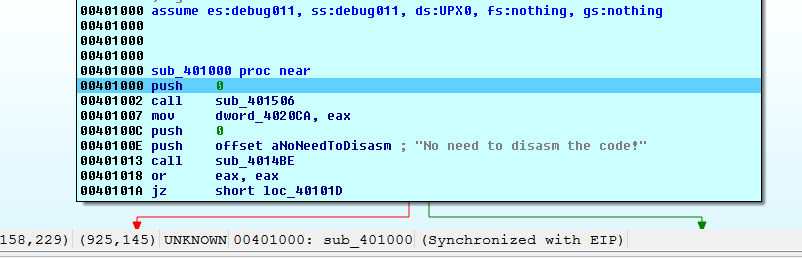
O sea que hasta ahora obtuvimos el OEP y paramos en el mismo de dos formas diferentes, pudimos hacer un SNAPSHOT del código armado, lo único que nos falta es DUMPEAR y RECONSTRUIR la IAT, para terminar de obtener un archivo desempacado ejecutable y funcional.
Hasta la parte 15 donde terminaremos eso.
Ricardo Narvaja